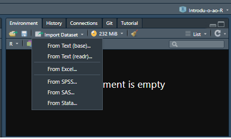
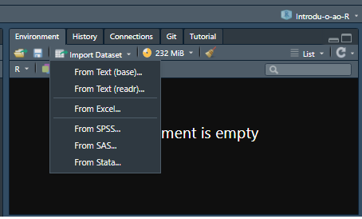

Introdução ao R 
Costa, W. G.
2022-10-20
Last updated: 2022-10-20
Checks: 6 1
Knit directory:
Manipulacao-dados-e-Analise-Grafica-R/
This reproducible R Markdown analysis was created with workflowr (version 1.7.0). The Checks tab describes the reproducibility checks that were applied when the results were created. The Past versions tab lists the development history.
The R Markdown file has unstaged changes. To know which version of
the R Markdown file created these results, you’ll want to first commit
it to the Git repo. If you’re still working on the analysis, you can
ignore this warning. When you’re finished, you can run
wflow_publish to commit the R Markdown file and build the
HTML.
Great job! The global environment was empty. Objects defined in the global environment can affect the analysis in your R Markdown file in unknown ways. For reproduciblity it’s best to always run the code in an empty environment.
The command set.seed(20220826) was run prior to running
the code in the R Markdown file. Setting a seed ensures that any results
that rely on randomness, e.g. subsampling or permutations, are
reproducible.
Great job! Recording the operating system, R version, and package versions is critical for reproducibility.
Nice! There were no cached chunks for this analysis, so you can be confident that you successfully produced the results during this run.
Great job! Using relative paths to the files within your workflowr project makes it easier to run your code on other machines.
Great! You are using Git for version control. Tracking code development and connecting the code version to the results is critical for reproducibility.
The results in this page were generated with repository version 76d7bb9. See the Past versions tab to see a history of the changes made to the R Markdown and HTML files.
Note that you need to be careful to ensure that all relevant files for
the analysis have been committed to Git prior to generating the results
(you can use wflow_publish or
wflow_git_commit). workflowr only checks the R Markdown
file, but you know if there are other scripts or data files that it
depends on. Below is the status of the Git repository when the results
were generated:
Ignored files:
Ignored: .Rproj.user/
Unstaged changes:
Modified: analysis/introducao-r.Rmd
Modified: analysis/manipulacaodedados.Rmd
Note that any generated files, e.g. HTML, png, CSS, etc., are not included in this status report because it is ok for generated content to have uncommitted changes.
These are the previous versions of the repository in which changes were
made to the R Markdown (analysis/introducao-r.Rmd) and HTML
(docs/introducao-r.html) files. If you’ve configured a
remote Git repository (see ?wflow_git_remote), click on the
hyperlinks in the table below to view the files as they were in that
past version.
| File | Version | Author | Date | Message |
|---|---|---|---|---|
| Rmd | 206bfa9 | WevertonGomesCosta | 2022-09-12 | Update |
| html | 206bfa9 | WevertonGomesCosta | 2022-09-12 | Update |
Introdução ao R
Para que você possa ter mais conhecimento sobre o R, preparei um material de introdução ao R. Assim você pode aprender mais sobre o software e como utilizá-lo. Na seção Tutorial já vimos sobre a instalação e carregamento de pacotes e outros tópicos importantes. Aqui vamos dar mais enfoque na programação em si.
Importando dados
Os dados podem ser importados para o R em diversos formatos (tipos de arquivos). Alguns dos formatos mais usados são mostrados a seguir:
- Planilha eletrônica (.xls, .xlsx, .ods)
- Bloco de notas (.txt)
- Valores separados por vírgulas (.csv)
- Dbase (.dbf)
- Diversos Pacotes estatísticos: (.Rdata - R), (.sav - SPSS), etc
É possível importar os dados pela própria interface do RStudio. Para
isso, vamos em Import Dataset e selecionamos o formato dos
dados.
 

Durante o curso iremos utilizar várias funções para importação de
dados, para que você possa se ambientar melhor com as funções. De início
vamos usar a função read_csv() do pacote
readr, já incluso no framework tidyverse. Essa
função importa tanto dados em formato .csv quanto .txt.
library(tidyverse)-- Attaching packages --------------------------------------- tidyverse 1.3.2 --
v ggplot2 3.3.6 v purrr 0.3.4
v tibble 3.1.8 v dplyr 1.0.10
v tidyr 1.2.1 v stringr 1.4.1
v readr 2.1.2 v forcats 0.5.2
-- Conflicts ------------------------------------------ tidyverse_conflicts() --
x dplyr::filter() masks stats::filter()
x dplyr::lag() masks stats::lag()dados <- read_csv("data/dados.csv") # Função para importar os dadosRows: 96 Columns: 9
-- Column specification --------------------------------------------------------
Delimiter: ","
chr (2): trat, gen
dbl (7): id, blocos, sev1, sev2, sev3, area, areat
i Use `spec()` to retrieve the full column specification for this data.
i Specify the column types or set `show_col_types = FALSE` to quiet this message.dados# A tibble: 96 x 9
trat id gen blocos sev1 sev2 sev3 area areat
<chr> <dbl> <chr> <dbl> <dbl> <dbl> <dbl> <dbl> <dbl>
1 Testemunha 6165 1 Predileta 1 0.97 1.9 12 58.7 14.7
2 Testemunha 6165 2 Predileta 2 1.9 1.9 8 48.0 13.0
3 Testemunha 6165 3 Predileta 3 3.3 3.3 12 76.6 17.2
4 Testemunha 6165 4 Predileta 4 1.9 3.3 12 71.8 16.5
5 Testemunha 6165 5 Inca 1 1.9 12 31 199. 29.9
6 Testemunha 6165 6 Inca 2 1.9 12 31 199. 29.9
7 Testemunha 6165 7 Inca 3 1.9 8 22 140. 24.4
8 Testemunha 6165 8 Inca 4 0.97 12 31 196. 29.6
9 UFV 02 9 Predileta 1 0.97 8 8 87.4 18.6
10 UFV 02 10 Predileta 2 1.9 12 12 133. 23.7
# ... with 86 more rowsExportando dados:
Da mesma forma que a importação dos dados, os dados também podem ser exportados para do R em diversos formatos (tipos de arquivos).
Aqui, como exemplo, iremos usar a função write_csv()
para exportar os dados no formato .csv.
write_csv(dados, file = "dados2.csv")Objetos
Objetos são qualquer variável que irá ser armazenado durante a sua
sessão no R. Para que uma variável será armazenada no ambiente de sua
sessão você deve atribuir um ou mais valores a está variável utilizando
<-.
Criando objetos
x <- 50Em seu ambiente de trabalho (parte superior direita da janela do RStudio) o objetivo irá ser armazenado e você pode acessá-lo quando desejar.

Você também pode atribuir valores de objetos de outras formas,
utilizando = ou ->:
15 -> y
z = 25OBS: Quando utilizar -> o valor da variavel deve
ser especificado antes do sinal e a variável do objeto deve ser
especificado depois do sinal.
Também é possível especificar que um objeto seja atribuído por um
resultado de uma função. Nesse caso vamos adotar a raiz quadrada de z
sqrt(z) como a variavel m.
m <- sqrt(z)Imprimir valores dos objetos
Usamos a função print() para printar ou imprimir os
valores dos objetos que estão armazenados, veja o exemplo:
print(x)[1] 50print(y)[1] 15print(z)[1] 25print(m)[1] 5Observação: Se atribuirmos um novo valor a um objeto já existente
perderemos o conteúdo que ele estava armazenando anteriormente. Por
exemplo, se atribuirmos um valor a x <- 100, em seu
ambiente x passará a ter o valor de 100 e não mais de 50, como atribuído
anteriormente
Listar objetos armazenados no ambiente
Para listar todos os objetos armazenados no ambiente utilizamos a
função ls().
ls()[1] "dados" "m" "x" "y" "z" Removendo objetos
Removendo objetos específicos
Se desejar remover algum objeto armazenado, você pode utilizar a
função rm() incluindo dentro do parênteses o objeto a ser
removido do seu ambiente.
rm(x, y)Remover todos objetos
Agora, se você quer limpar todo o seu ambiente, dentro da função
rm() você pode especificar uma lista list(),
veremos mais à frente sobre listas, das variáveis presentes no
seu ambiente ls().
rm(list = ls()) Atributos dos Objetos
No R, quase todo objeto possui atributos como tipo, tamanho, etc.
Tipo e tamanho são os atributos intrínsecos de todo objeto.
O tipo de um objeto é revelado pelo comando
mode()ouclass()outypeof(). Para saber mais recomendo o Manual de definição de linguagem R.
Principais tipos de objetos no R:
caracter: Texto ou caracter.
nome <- "nome" ## Observe que caracteres são tratados com o uso de aspas.
nome[1] "nome"numeric: Números reais.
numero <- 5.10
numero[1] 5.1integer: Números inteiros.
inteiro <- c(5, 10, 15, 16)
inteiro[1] 5 10 15 16double: Números reais, mesmo quenumeric.
numero <- 5.10
numero[1] 5.1logical: também chamados de ou booleanos, são TRUE ou FALSE. T ou F também são aceitos.
x <- c(TRUE, FALSE, FALSE) # vetor de elementos lógicos
x[1] TRUE FALSE FALSEfator: Vetor que representa dados categóricos.
cores <- factor(c("rosa", "azul", "preto"))
cores[1] rosa azul preto
Levels: azul preto rosaIdentificando os atributos dos objetos - mode() ou
class() ou typeof().
Exemplo com caracter.
mode(nome) ## Retorna o modo do objeto[1] "character"class(nome) ## Retorna a classe do objeto[1] "character"typeof(nome) ## Retorna o tipo do objeto[1] "character"Exemplo com numeric.
valor <- 5
mode(valor)[1] "numeric"class(valor)[1] "numeric"typeof(valor)[1] "double"Exemplo com logical.
v <- TRUE
mode(v)
class(v)
typeof(v)Um objeto pode conter um ou mais elementos, a função
length() retorna o tamanho do objeto. Como exemplo
atribuímos um valor a x e depois utilizamos a função
length() para retornar o tamanho do objeto.
x <- 10
length(x) ## Retorna o tamanho do objeto[1] 1Como exemplo, vamos criar um objeto y sendo uma
sequência seq() de 1 a 5 e vamos solicitar o tamanho
length() desse objeto.
y <- seq(1, 5, 1) ## A função seq() retorna uma sequência de números, considerando o número inicial (1) até um número final (5), dando um salto do último número indicado (1).
length(y) ## Retorna o tamanho do objeto[1] 5Estrutura dos objetos
No R, os dados contidos em um objeto podem estar organizados em diferentes estruturas.
vector(): Uma sequência de valores numéricos ou de caracteres (letras, palavras) organizados em apenas uma dimensão.
z <- c(60, 70, 80, 90)
z[1] 60 70 80 90mode(z)[1] "numeric"class(z)[1] "numeric"typeof(z)[1] "double"Observação: Todos os elementos de um vetor têm que ser do mesmo tipo (modo). Caso tentemos criar um vetor com elementos de tipo diferente o R vai forçá-los a ser do mesmo tipo.
z <- c(60, 70, 80, 90, "nome")
z[1] "60" "70" "80" "90" "nome"mode(z)[1] "character"class(z)[1] "character"typeof(z)[1] "character"matrix(): Coleção de vetores em linhas e colunas, todos os vetores dever ser do mesmo tipo (numérico ou de caracteres).
w <- matrix(c(60, 70, 80, 90, 100, 110, 120, 130, 150), 2, 4, byrow = T)Warning in matrix(c(60, 70, 80, 90, 100, 110, 120, 130, 150), 2, 4, byrow = T):
comprimento dos dados [9] não é um submúltiplo ou múltiplo do número de linhas
[2]w [,1] [,2] [,3] [,4]
[1,] 60 70 80 90
[2,] 100 110 120 130class(w)[1] "matrix" "array" class(w)[1] "matrix" "array" typeof(w)[1] "double"array(): Pode conter uma (vetor), duas (matriz) ou mais dimensões.
z <- array(c(60, 70, 80, 90, 100, 110, 120, 130, 150), dim = c(3, 3, 3))
z, , 1
[,1] [,2] [,3]
[1,] 60 90 120
[2,] 70 100 130
[3,] 80 110 150
, , 2
[,1] [,2] [,3]
[1,] 60 90 120
[2,] 70 100 130
[3,] 80 110 150
, , 3
[,1] [,2] [,3]
[1,] 60 90 120
[2,] 70 100 130
[3,] 80 110 150mode(z)[1] "numeric"class(z)[1] "array"typeof(z)[1] "double"list(): Combina diferentes tipos num mesmo objeto, mas em formato de lista. Listas são coleções de elementos que não precisam ser da mesma classe. list é uma importante classe de objetos no R. Listas podem ser criadas explicitamente usando a funçãolist(). Vejamos alguns exemplos:
q <- list(w)
mode(q)[1] "list"class(q)[1] "list"typeof(q)[1] "list"Observações:
Uma lista pode conter vetores e outras listas;
Cada componente da lista pode ser acessado por meio de um índice entre dois colchetes [].
data.frame(): O mesmo que uma matriz, mas aceita vetores de diferentes estruturas (numérico, caracteres, lógicos, complexos, inteiros). Geralmente nós guardamos nossos dados em objetos do tipodata.frame, pois sempre temos variáveis numéricas e variáveis categóricas (por exemplo, largura do rio e nome do rio, respectivamente).
w <- data.frame(c(1, 2, 3), c(1, 2, 3))
mode(w)[1] "list"class(w)[1] "data.frame"typeof(w)[1] "list"Veja que o modo do data.frame e o tipo aparecem em formato de list e a classe como data.frame. Isso porque a coleção formada pelas 2 variáveis forma um objeto do tipo list (lista). Então cada uma das variáveis é um vetor e os dois vetores formam uma lista. Essa é uma lista especial onde cada um dos vetores possuem o mesmo número de elementos. Este conjunto de dados é da classe data.frame. Assim um data frame contém uma lista na qual todos os seus componentes possuem o mesmo número de elementos.
Exercícios
Crie um vetor numérico de comprimento 5, obtenha a raiz quadrada e multiplique por um número.
Considere o vetor
x <- c("milho", "soja"). Transforme o vetorxem um vetor de fatores, mas inclua o nível"algodao".Crie uma matriz (M) quadrada de ordem 5 preenchida com a sequência de 1 à 25.
Defina um fator e um vetor numérico e construa uma lista com os dois objetos atribuindo a cada componente um nome de sua escolha.
Crie um data frame com a matriz de dados peso=(60,70,80), altura=(160,150,170) e sexo=(F,M,F). Calcule a média de cada variável.
Função Envolvendo Condições
No R, as funções envolvendo condições são programadas com
if(), else() e ifelse(). O início do código se
dá com o comando if seguido de parênteses e chaves if(){}.
Dentro dos parênteses temos uma condição lógica, que deverá ter como
resultado ou TRUE ou FALSE. Dentro das chaves
temos o bloco de código que será executado se – e somente se – a
condição dos parênteses for TRUE. Vejamos um exemplo muito
simples. Temos dois blocos de código que criam as variáveis
x e y, mas eles só serão executados se as
variáveis x e y forem TRUE,
respectivamente.
x <- TRUE
y <- FALSE
## só executa se x = TRUE
if (x) {
a <- 1
}
## só executa se cria_y = TRUE
if (y) {
b <- 1
}
## note que a foi criado
exists("a")[1] TRUEexists("b")[1] FALSEDiversas vezes em programação queremos apenas que a ação descrita no código ocorra caso ela satisfaça uma condição pré-estabelecida. Para isso existem os operadores lógicos e as expressões apresentadas abaixo:
Expressões lógicas if(), else() e
ifelse().
Para utilizá-las, além dos operadores acima, é importante saber o
comando de E e OU em programação, que são respectivamente:
& e |. Veja os exemplos abaixo:
m <- 5
if (m == 5) {
print("sim")
} else{
print("não")
}[1] "sim"Aqui o valor retornado da função foi sim pois
m é igual a 5 na condição.
if(m == 4) {
print("sim")
} else {
print("não")
}[1] "não"Aqui o valor retornado da função foi não pois
m é igual a 4 na condição.
if(m >= 4) {
print("sim")
} else{
print("não")
}[1] "sim"Aqui o valor retornado da função foi sim pois
m é maior do que 4 na condição.
if(m > 4) {
print("sim")
} else{
print("não")
}[1] "sim"Por fim, aqui o valor retornado da função foi sim
pois m é diferente de 4 na condição.
if(m != 4) {
print("sim")
} else{
print("não")
}[1] "sim"Alternativamente, pode-se usar o comando ifelse(). Veja
os exemplos abaixo.
n <- 6
ifelse(n == 6, "sim", "não")[1] "sim"ifelse(n != 6, "sim", "não")[1] "não"ifelse(n >= 6, "sim", "não")[1] "sim"ifelse(n %% 2 == 0, "par", "impar")[1] "par"O símbolo %% refere-se a uma divisão onde o resultado retornado é inteiro.
Utilizando os operadores lógicos & e
|.
Para utilizar esses operadores lógicos dependemos de no mínimo duas condições. Como exemplo, criamos um programa que identifica se os objetos são positivos ou negativos.
a <- -5
b <- 0
if (a >= 0 & b >= 0) {
print("a e b são números positivos")
} else{
if (a >= 0 & b < 0) {
print("a é positivo e b é negativo")
} else{
if (a < 0 & b >= 0) {
print("a é negativo e b é positivo")
} else{
if (a < 0 & b < 0) {
print("a e b são negativos")
}
}
}
}[1] "a é negativo e b é positivo"Outro exemplo, podemos criar um programa que identifica se existe ao menos um objeto positivo ou negativo.
a <- 2
b <- -5
if (a < 0 | b < 0) {
print("Existe pelo menos uma variável negativa")
} else{
print("Todas as variáveis do conjunto de dados são positivas")
}[1] "Existe pelo menos uma variável negativa"- ATIVIDADES
Crie um vetor contendo 10 valores e em seguida crie um programa que identifique qual o maior valor desta lista.
Crie um programa que identifique se um valor é par ou ímpar.
Criando funções no R
Uma das maiores vantagens do R é a possibilidade e a facilidade de se criar novas funções. Como vimos, já existem várias funções nativas do R e também disponíveis em diversos pacotes, além do fato que novos pacotes e novas funções surgem a cada dia. Desta forma, apesar de ser fácil criar uma função, não se deve descartar a possibilidade de elas já existirem, com o mesmo propósito e terem sido disponibilizadas por outros autores, o que nos economiza muito tempo em nossos trabalhos. Desta forma, não queira reinventar a roda. Será mostrado aqui como criar algumas funções simples, visando apenas ao entendimento de como elas podem ser desenvolvidas.
As funções nada mais são que objetos do R da classe
function. Como todo objeto, as funções podem ter quaisquer
nomes, desde que iniciados com uma letra (maiúscula ou minúscula).
Observação: evite criar objetos com nomes de funções já existentes no R, por exemplo: sum, mean, sd, t, c, etc.
Como exemplo vamos criar uma função de soma
soma <- function(a, b) {
soma <- a + b
return(soma)
}
class(soma)[1] "function"Aplicando a função soma() em dois objetos numéricos.
x <- 6
y <- 10
soma(x, y)[1] 16Podemos também somar vetores por meio dessa função:
x <- c(2, 4, 6)
y <- c(6, 8, 10)
soma(x, y)[1] 8 12 16Valores ausentes
Valores ausentes (missing values) são denotados por NA
ou NaN. Um valor NaN também é NA,
mas a recíproca não é verdadeira. As funções is.na() e
is.nan() são usadas para testar se um objeto é
NA ou NaN, respectivamente.
x <- c(1, 2, NA, 10, 3) # vetor com um elemento NAis.na(x) # retorna um vetor lógico indicando que elementos são NA[1] FALSE FALSE TRUE FALSE FALSE
sessionInfo()R version 4.1.3 (2022-03-10)
Platform: x86_64-w64-mingw32/x64 (64-bit)
Running under: Windows 10 x64 (build 19042)
Matrix products: default
locale:
[1] LC_COLLATE=Portuguese_Brazil.1252 LC_CTYPE=Portuguese_Brazil.1252
[3] LC_MONETARY=Portuguese_Brazil.1252 LC_NUMERIC=C
[5] LC_TIME=Portuguese_Brazil.1252
attached base packages:
[1] stats graphics grDevices utils datasets methods base
other attached packages:
[1] forcats_0.5.2 stringr_1.4.1 dplyr_1.0.10 purrr_0.3.4
[5] readr_2.1.2 tidyr_1.2.1 tibble_3.1.8 ggplot2_3.3.6
[9] tidyverse_1.3.2
loaded via a namespace (and not attached):
[1] Rcpp_1.0.9 lubridate_1.8.0 assertthat_0.2.1
[4] rprojroot_2.0.3 digest_0.6.29 utf8_1.2.2
[7] R6_2.5.1 cellranger_1.1.0 backports_1.4.1
[10] reprex_2.0.2 evaluate_0.16 httr_1.4.4
[13] pillar_1.8.1 rlang_1.0.6 googlesheets4_1.0.1
[16] readxl_1.4.1 rstudioapi_0.14 whisker_0.4
[19] jquerylib_0.1.4 rmarkdown_2.16 googledrive_2.0.0
[22] bit_4.0.4 munsell_0.5.0 broom_1.0.1
[25] compiler_4.1.3 httpuv_1.6.5 modelr_0.1.9
[28] xfun_0.32 pkgconfig_2.0.3 htmltools_0.5.3
[31] tidyselect_1.1.2 workflowr_1.7.0 fansi_1.0.3
[34] crayon_1.5.1 withr_2.5.0 tzdb_0.3.0
[37] dbplyr_2.2.1 later_1.3.0 grid_4.1.3
[40] jsonlite_1.8.0 gtable_0.3.1 lifecycle_1.0.2
[43] DBI_1.1.3 git2r_0.30.1 magrittr_2.0.3
[46] scales_1.2.1 vroom_1.5.7 cli_3.3.0
[49] stringi_1.7.6 cachem_1.0.6 fs_1.5.2
[52] promises_1.2.0.1 xml2_1.3.3 bslib_0.4.0
[55] ellipsis_0.3.2 generics_0.1.3 vctrs_0.4.1
[58] tools_4.1.3 bit64_4.0.5 glue_1.6.2
[61] hms_1.1.2 parallel_4.1.3 fastmap_1.1.0
[64] yaml_2.3.5 colorspace_2.0-3 gargle_1.2.1
[67] rvest_1.0.3 knitr_1.40 haven_2.5.1
[70] sass_0.4.2